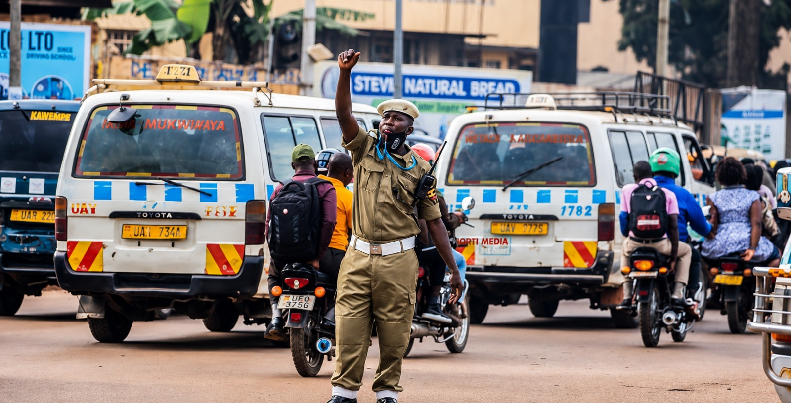

Causes & Safety Advice

Photo: Heavy Traffic Congestion
Common Causes of Accidents at Black Spots
- Overspeeding — especially on long straight highway stretches with poor lighting.
- Poor road markings and crossing points — pedestrians forced to cross outside marked zones.
- Overloading of vehicles — particularly buses and taxis carrying more passengers than is safe.
- Sharp bends and hilly terrain — reduce a driver's reaction time.
- Heavy congestion — leads to lane-cutting and impatient overtaking.
- Driver fatigue — common on long-distance night travel.
Safety Advice for Drivers
- Reduce speed on known black spots, especially at night.
- Never overload your vehicle beyond its passenger limit.
- Take rest breaks on long journeys to avoid fatigue.
- Watch for pedestrians and boda bodas at congested junctions.
Safety Advice for Pedestrians
- Always use marked pedestrian crossings where available.
- Make eye contact with drivers before crossing.
- Avoid crossing highways at bends or the top of a hill, where drivers cannot see you in time.
Safety Advice for Schools Planning Trips
- Check this map for black spots along your planned route before travelling.
- Confirm the bus is not overloaded and is roadworthy.
- Plan travel during daylight hours where possible.
- Share the emergency contacts page with the trip supervisor.